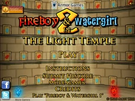
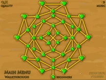

| Főoldal |
|---|
| Erdei templom |
| Fény templom |
| Jég templom |
| Kristály templom |
| Kvíz oldal |
| Kontakt oldal |
A Fireboy és Watergirl in The Forest Temple a sorozat második játéka.
A megjelenés dátuma 2010. október 26. volt.
A főmenü:

41 szint van, amelyek 17 normál szintből, 7 alap szintből, 10 fehér gyémánt szintből és 7 sötét szintből állnak. Normál szinten különféle rejtvényeket kell megoldani, mint például karok, gombok, dobozok, az újonnan bevezetett fényérzékelők és tükrök, stb., valamint néhány gyémánt gyűjtése, bár nem szükséges a szint teljesítéséhez, ez növeli az értékelést a végén. Az egyidejűleg tervezett pályákon mindkét karaktert egyszerre kell szimmetrikusan mozgatni, általában nincs sok rejtvény és csak akadályok vannak. A fehér gyémánt pályán csak egy gyémánt van, amelyet össze kell gyűjteni a szint átjutásához, nagyjából ugyanaz, mint egy normál szint, de csak egy gyémánt szükséges a szint teljesítéséhez.
Bevezette a szint exkluzív változatát is, a sötét pályákat.
A sötét pályákon a két karakteren és gombon kívül nem lesz fény, nem kell gyémántokat sem gyűjteni.
A szint kiválasztása:
